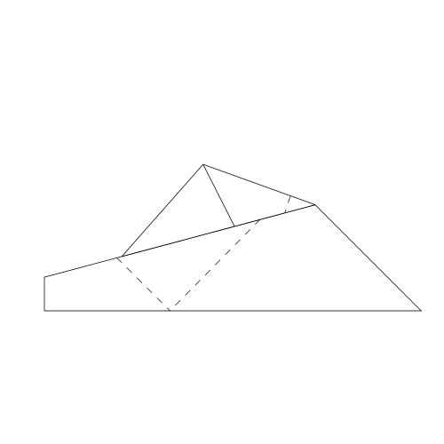

I designed my own paper airplane. It is not the best paper
airplane, but it does fly. The airplane is made with a square
piece of paper. Its axis of symmetry is along the diagonal,
which is somewhat unusual.
-
Fold a square sheet of paper in half both horizontally
and vertically. (These folds just guide folding the airplane
in thirds along the diagonal in a later step.)
Unfold and fold the sheet in half along one diagonal.
This will be the main axis of symmetry.
-
Fold the top-right corner down to vertical crease.
The fold should reach all the way to the top-left corner.
-
Fold the bottom-left corner up like the previous step.
This should form a flattened cone spreading out from
the upper-left corner.
-
Turn the paper over. Fold the upper-left point down
to the middle of the sheet of paper, where the horizontal
and vertical creases cross.
-
Turn the paper over to the original side.
-
Fold the flap on the top layer of the cone down.
The fold should extend from the highest point
on the upper-left, to the end of the previous fold
on the lower-right.
-
Temporarily unfold the previous fold.
Temporarily unfold the point of the cone back out
from where it was folded underneath.
-
Unfold the entire flap of the cone down.
-
Fold the other flap of the cone up as shown,
from where the crease of the point that was previously
folded under meets the edge of the paper on the left,
over to where the flap meets the bottom layer of the
cone on the right.
-
No new folds. This step just shows what the sheet of
paper would look like now if you unfolded all existing folds.
-
Unfold the last fold.
On the top flap, which is also the top layer,
fold the bottom edge of the flap up to the crease
from the previous fold.
-
Repeat the same fold for the other side,
on the cone flap that is below the diagonal.
-

Refold the cone flaps above and below the diagonal
as shown.
-
Here is the tricky step.
Fold the point at the upper-left into
the cone. When complete it should appear as shown.
-
Refold the paper along the original diagonal.
-

Fold the plane in half. Turn it so the original diagonal
is at the bottom.
-
Fold the wing on the top layer down from the top
corner at left, such that on the lower right
the prior crease reaches just to the bottom of the plane.
This wing fold will be close to, but not exactly,
parallel to the bottom of the plane.
-
Turn the plane over.
Fold down the wing on the other side.
Lift both wings up so that they stick out from the keel.
The airplane is ready to fly.